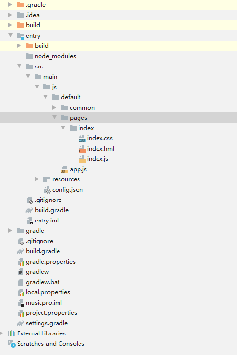
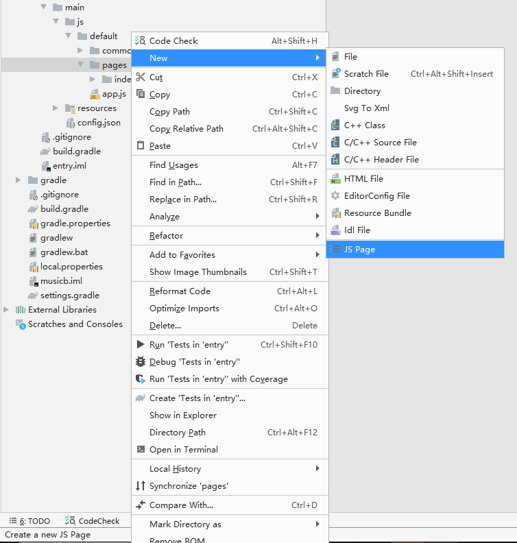
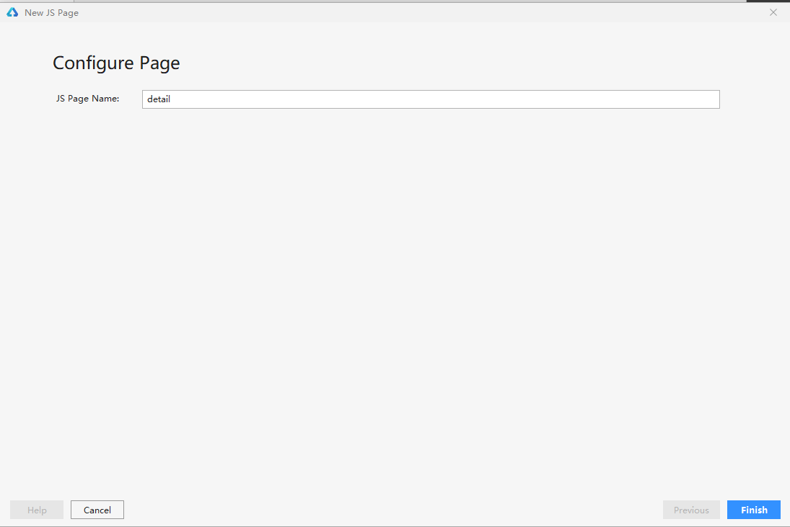
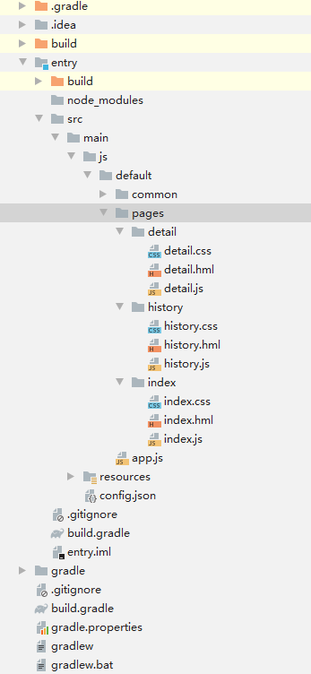

Adding Pages¶
Creating the Home Page¶
After the project is created, the index page is generated by default. The following figure shows the project directory.
Figure 1 Project directory

Creating Detail and History Pages¶
Perform the following steps twice to create the rest two pages:
Right-click pages and choose New > JS Page from the shortcut menu.
Figure 2 Adding a pageEnter the page name.
Figure 3 Entering the page nameConfirm the creation.
The following figure shows the application project directory after the detail page and history page are created. Each page contains a .hml layout file, a .css file, and a .js file (containing service logic code).
Figure 4 Complete project directory